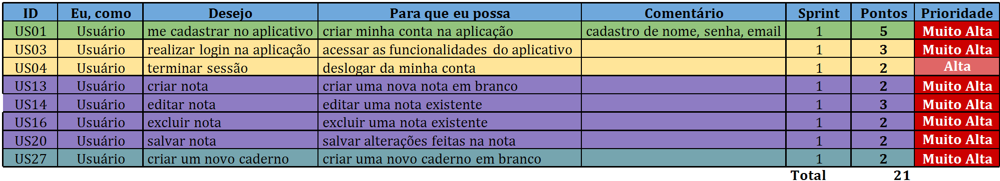
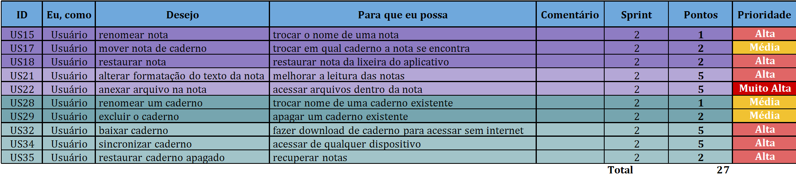
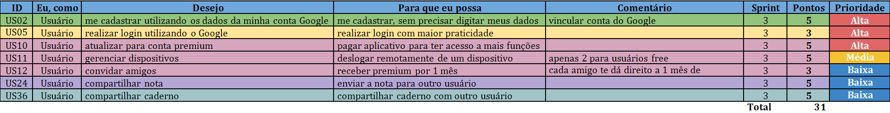
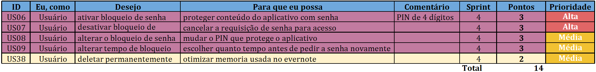
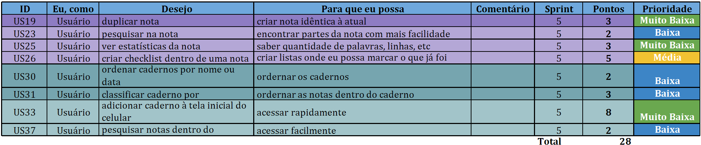

Modelagem - Ágil
Product Backlog
| Versionamento |
|---|
| Versões |
| ID | Product Backlog |
|---|---|
| US01 | Fazer cadastro no aplicativo |
| US02 | Fazer cadastro utilizando os dados da minha conta Google |
| US03 | Realizar login na aplicação |
| US04 | Terminar sessão |
| US05 | Realizar login utilizando o Google |
| US06 | Ativar bloqueio de senha |
| US07 | Desativar bloqueio de senha |
| US08 | Alterar o bloqueio de senha |
| US09 | Alterar tempo de bloqueio |
| US10 | Atualizar para conta premium |
| US11 | Gerenciar dispositivos |
| US12 | Convidar amigos |
| US13 | Criar nota |
| US14 | Editar nota |
| US15 | Renomear nota |
| US16 | Excluir nota |
| US17 | Mover nota de caderno |
| US18 | Restaurar nota de caderno |
| US19 | Duplicar nota |
| US20 | Salvar nota |
| US21 | Alterar formatação do texto da nota |
| US22 | Anexar arquivo na nota |
| US23 | Pesquisar na nota |
| US24 | Compartilhar nota |
| US25 | Ver estatísticas da nota |
| US26 | Criar checklist dentro de uma nota |
| US27 | Criar um novo caderno |
| US28 | Renomear um caderno |
| US29 | Excluir o caderno |
| US30 | Ordenar cadernos por nome ou data |
| US31 | Classificar caderno |
| US32 | Baixar caderno |
| US33 | Adicionar caderno à tela inicial do celular |
| US34 | Sincronizar caderno |
| US35 | Restaurar caderno apagado |
| US36 | Compartilhar caderno |
| US37 | Pesquisar notas dentro do caderno |
| US38 | Deletar permanentemente |
Cadastro
| Tema | Épico | ID | "Eu, como" | Desejo | Para que eu possa | Comentário | Sprint | pontos | prioridade |
|---|---|---|---|---|---|---|---|---|---|
| Cadastro | US01 | Usuário | me cadastrar no aplicativo | criar minha conta na aplicação | "cadastro de nome, senha, email" | 1 | 5 | Muito Alta | |
| US02 | Usuário | me cadastrar utilizando os dados da minha conta Google | "me cadastrar, sem precisar digitar meus dados" | vincular conta do Google | 3 | 5 | Alta |
US01 - Fazer cadastro no aplicativo
Criterios de Aceitação
-
Deve ser apresentado uma campo para inserção do E-mail
-
Deve ser apresentado uma campo para inserção da Senha
-
Deve ser efetuado o cadastro
US02 - Fazer cadastro utilizando os dados da minha conta Google
Criterios de Aceitação
-
Deve pedir permissão da conta Google
-
Deve ser efetuado o cadastro
Login
| Tema | Épico | ID | "Eu, como" | Desejo | Para que eu possa | Comentário | Sprint | pontos | prioridade |
|---|---|---|---|---|---|---|---|---|---|
| Login | US03 | Usuário | realizar login na aplicação | acessar as funcionalidades do aplicativo | 1 | 3 | Muito Alta | ||
| US04 | Usuário | terminar sessão | deslogar da minha conta | 1 | 2 | Alta | |||
| US05 | Usuário | realizar login utilizando o Google | realizar login com maior praticidade |
US03 - Realizar login na aplicação
Criterios de Aceitação
-
Deve ser apresentado uma campo para inserção do E-mail
-
Deve ser apresentado uma campo para inserção da Senha
-
Deve ser efetuado o login
US04 - Terminar sessão
Criterios de Aceitação
-
Deve ser deslogado ao clicar no botão de deslogar
-
Deve voltar para a página inicial
US05 - Realizar login utilizando o Google
Criterios de Aceitação
-
Deve haver um campo para login com conta google
-
Deve aparecer confirmação de login com conta Google
Conta
| Tema | Épico | ID | "Eu, como" | Desejo | Para que eu possa | Comentário | Sprint | pontos | prioridade |
|---|---|---|---|---|---|---|---|---|---|
| Conta | Administrar bloqueio de senha | US06 | Usuário | ativar bloqueio de senha | proteger conteúdo do aplicativo com senha | PIN de 4 dígitos | 4 | 3 | Alta |
| US07 | Usuário | desativar bloqueio de senha | cancelar a requisição de senha para acesso | 4 | 3 | Alta | |||
| US08 | Usuário | alterar o bloqueio de senha | mudar o PIN que protege o aplicativo | 4 | 3 | Média | |||
| US09 | Usuário | alterar tempo de bloqueio | escolher quanto tempo antes de pedir a senha novamente | 4 | 3 | Média | |||
| US10 | Usuário | atualizar para conta premium | pagar aplicativo para ter acesso a mais funções | 3 | 5 | Alta | |||
| US11 | Usuário | gerenciar dispositivos | deslogar remotamente de um dispositivo | apenas 2 para usuários free | 3 | 5 | Média | ||
| US12 | Usuário | convidar amigos | receber premium por 1 mês | cada amigo te dá direito a 1 mês de premium | 3 | 3 | Baixa |
Nota
| Tema | Épico | ID | "Eu, como" | Desejo | Para que eu possa | Comentário | Sprint | pontos | prioridade |
|---|---|---|---|---|---|---|---|---|---|
| Nota | Gerenciar notas | US13 | Usuário | criar nota | criar uma nova nota em branco | 1 | 2 | Muito Alta | |
| US14 | Usuário | editar nota | editar uma nota existente | 1 | 3 | Muito Alta | |||
| US15 | Usuário | renomear nota | trocar o nome de uma nota | 2 | 1 | Alta | |||
| US16 | Usuário | excluir nota | excluir uma nota existente | 1 | 2 | Muito Alta | |||
| US17 | Usuário | mover nota de caderno | trocar em qual caderno a nota se encontra | 2 | 2 | Média | |||
| US18 | Usuário | restaurar nota | restaurar nota da lixeira do aplicativo | 2 | 2 | Alta | |||
| US19 | Usuário | duplicar nota | criar nota idêntica à atual | 5 | 3 | Muito Baixa | |||
| US20 | Usuário | salvar nota | salvar alterações feitas na nota | 1 | 2 | Muito Alta | |||
| US21 | Usuário | alterar formatação do texto da nota | melhorar a leitura das notas | 2 | 5 | Alta | |||
| US22 | Usuário | anexar arquivo na nota | acessar arquivos dentro da nota | 2 | 5 | Muito Alta | |||
| US23 | Usuário | pesquisar na nota | encontrar partes da nota com mais facilidade | 5 | 2 | Baixa | |||
| US24 | Usuário | compartilhar nota | enviar a nota para outro usuário | 3 | 5 | Baixa | |||
| US25 | Usuário | ver estatísticas da nota | "saber quantidade de palavras, linhas, etc" | 5 | 3 | Muito Baixa | |||
| US26 | Usuário | criar checklist dentro de uma nota | criar listas onde eu possa marcar o que já foi feito | 5 | 5 | Média |
US13 - Criar Nota
Criterios de Aceitação
US14 - Editar Nota
Criterios de Aceitação
US15 - Renomear Nota
Criterios de Aceitação
-
Deve permitir a edição da título já existente
-
Deve salvar ao fechar a nota
US16 - Excluir Nota
Criterios de Aceitação
US17 - Mover Nota de Caderno
Criterios de Aceitação
-
Deve aparecer lista de cadernos já existentes
-
Deve aparecer opção de criar novo caderno
-
A nota deve estar no endereço do caderno para o qual foi movido
US18 - Restaurar Nota de Caderno
Criterios de Aceitação
US19 - Duplicar Nota
Criterios de Aceitação
US20 - Salvar Nota
Criterios de Aceitação
-
Deve haver opção de salvar
-
Deve salvar a nota automaticamente ao fechá-la
Caderno
| Tema | Épico | ID | "Eu, como" | Desejo | Para que eu possa | Comentário | Sprint | pontos | prioridade |
|---|---|---|---|---|---|---|---|---|---|
| Caderno | Gerenciar cadernos | US27 | Usuário | criar um novo caderno | criar uma novo caderno em branco | 1 | 2 | Muito Alta | |
| US28 | Usuário | renomear um caderno | trocar nome de uma caderno existente | 2 | 1 | Média | |||
| US29 | Usuário | excluir o caderno | apagar um caderno existente | 2 | 2 | Média | |||
| US30 | Usuário | ordenar cadernos por nome ou data | ordernar os cadernos | 5 | 2 | Baixa | |||
| US31 | Usuário | classificar caderno por | ordernar as notas dentro do caderno | 5 | 3 | Baixa | |||
| US32 | Usuário | baixar caderno | fazer download de caderno para acessar sem internet | 2 | 5 | Alta | |||
| US33 | Usuário | adicionar caderno à tela inicial do celular | acessar rapidamente | 5 | 8 | Muito Baixa | |||
| US34 | Usuário | sincronizar caderno | acessar de qualquer dispositivo | 2 | 5 | Alta | |||
| US35 | Usuário | restaurar caderno apagado | recuperar notas | 2 | 2 | Alta | |||
| US36 | Usuário | compartilhar caderno | compartilhar caderno com outro usuário | 3 | 5 | Baixa | |||
| US37 | Usuário | pesquisar notas dentro do caderno | acessar facilmente | 5 | 2 | Baixa |
Resultado
Sprint 1

Sprint 2

Sprint 3

Sprint 4

Sprint 5

Conclusão
Obtivemos 38 histórias de usuário, totalizando 121 pontos.
Clique aqui para ter acesso ao Product Backlog completo.